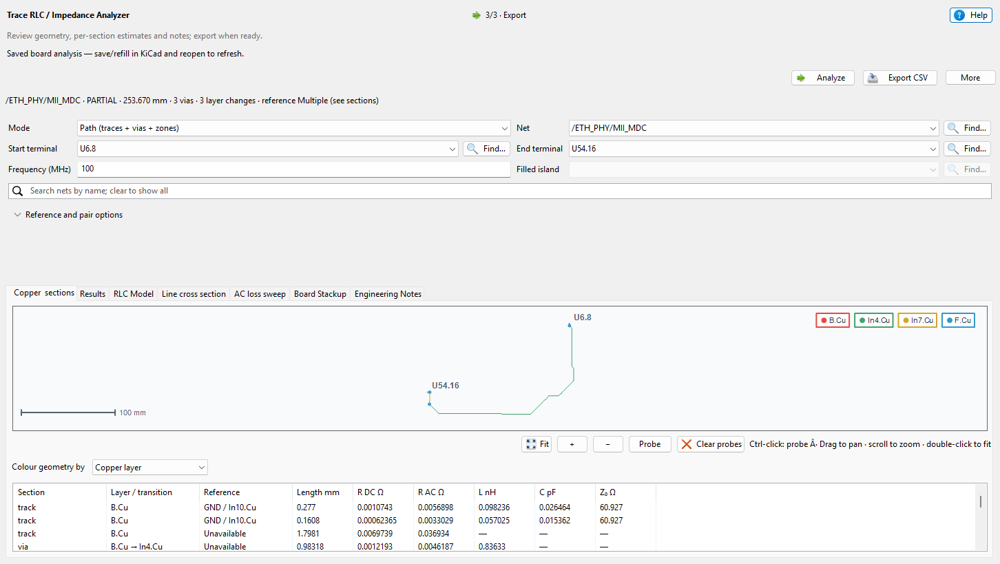
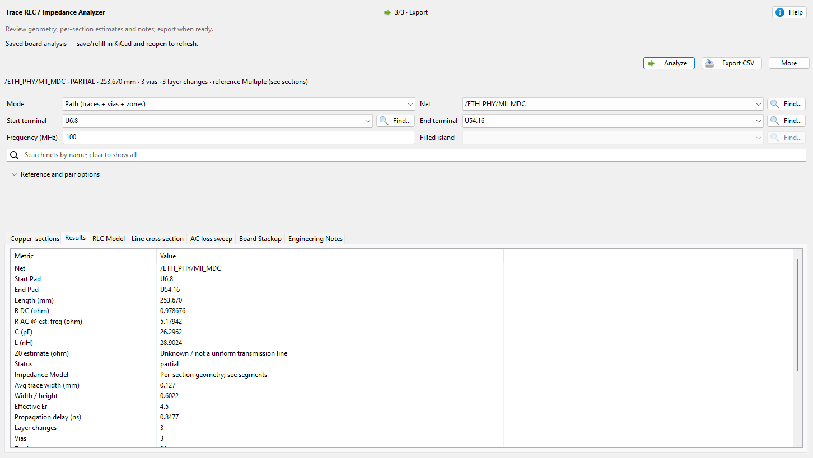
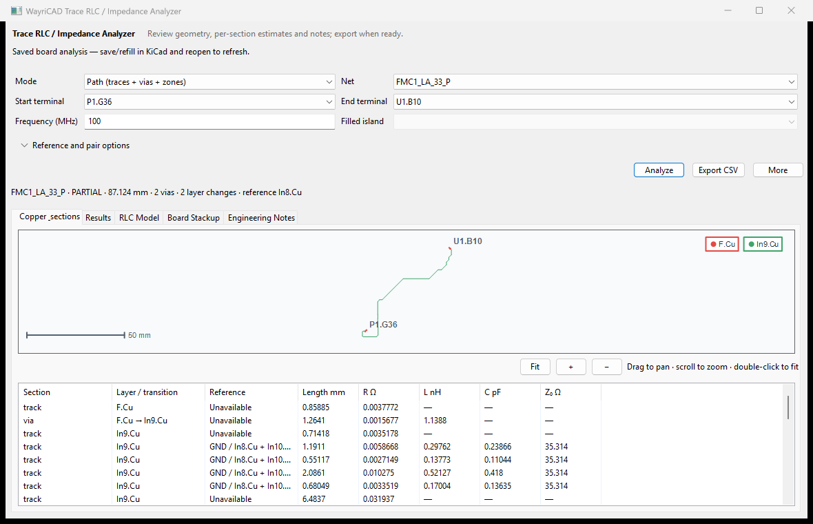
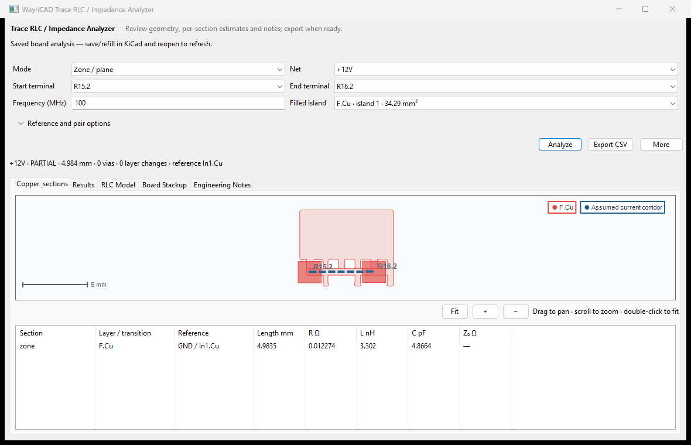
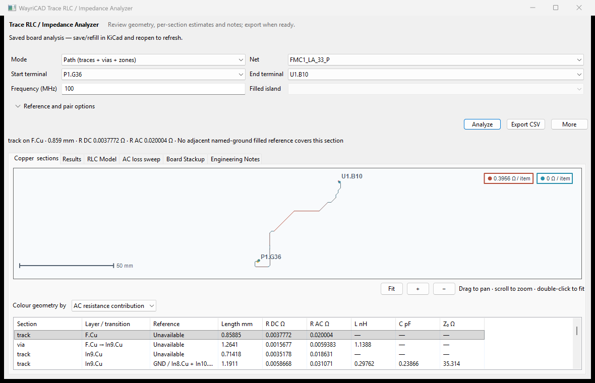
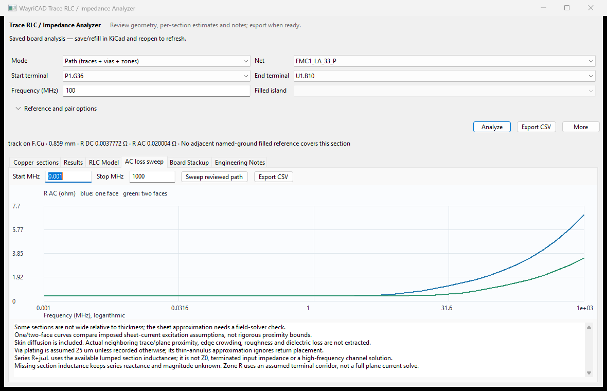

Choose a net and two terminals. Analyze a connected path or a filled zone, then inspect each section's geometry and reference.


Actual saved-board Marble run: /ETH_PHY/MII_MDC, U6.8 to U54.16, 253.670 mm, three vias and three layer changes. R DC is 0.978676 ohm. Status remains PARTIAL: missing reference coverage and via antipad capacitance are not replaced by guessed values; this mixed route has no uniform Z0. The frequency is 100 MHz; via plating defaults to an assumed 25 um. L/C totals contain modeled sections only, not a complete return-loop model.
Copper sections links the actual route to section rows. Results retains totals/unknowns; Board Stackup and Engineering Notes expose material sources and blockers. Line cross section and AC loss sweep have their own assumptions. Drag the horizontal divider to enlarge the active view. The earlier examples below are retained; current capture provenance records source hashes and limitations.


Choose Zone/plane, a filled island and two terminals on that island's layer. Set the assumed current-corridor width under options. A corridor must fit inside the filled polygon, preserving holes and isolated islands. Complex routes around obstacles can remain unresolved.
| Result | Meaning |
|---|---|
| Trace R/L/C/Z0 | Conductor and closed-form transmission-line estimates where stackup and reference coverage support the model. |
| Via R/L | Barrel resistance with assumed 25 µm plating and isolated partial inductance. Antipad capacitance is unknown. |
| Plane R/L | Terminal-dependent corridor estimate, not a solved spreading-current distribution. |
| Plane C | Parallel-plate estimate from actual filled-island/reference overlap. Do not combine it with corridor R/L as a single series circuit. |
Auto recognizes common ground net names and checks adjacent filled-copper coverage. An explicit reference layer still requires copper coverage. Analysis follows existing transitions through vias and plated pads; it does not move copper. Different-layer crossings cannot create a connection. In the native editor window, More → Refresh stackup rereads the saved stackup, preserves an available reference choice, and clears the previous result and AC sweep. Analyze again before exporting.
Partial totals contain modeled sections only. A mixed path has section impedances, not one uniform characteristic impedance. Disconnected terminals stay unresolved; there is no aggregate-net fallback. Automatic line estimates require saved dielectric thickness and Er between the signal and reference layers; missing values remain structured blockers and are never replaced by generic FR-4 dimensions. Embedded stackup values may disagree with separate manufacturing documents. Check the reported source and blocker actions.
These estimates omit full field/current distribution, pad and thermal-spoke impedance, solder mask, roughness, dielectric loss, and connector/package effects. Automatic board sections use corrected EMerge quasi-static microstrip or centered-stripline equations only when reference geometry is verified. The pair view reports separate paths and skew; it does not calculate board-extracted differential impedance. Nearby same-layer copper makes plain-microstrip Z0 unresolved.
Enter measured trace width, reference separation, dielectric Er and, where needed, lateral-ground slot or pair gap. The diagram updates with the selected topology. CPW and grounded CPW give single-ended Z0; edge-coupled centered stripline gives differential Z0. These manual modes assume zero copper thickness, homogeneous dielectric and continuous symmetric grounds. They do not prove that the selected board route has those dimensions. Differential CPW, edge-coupled microstrip and protocol compliance remain unresolved.
For a boardless JSON estimate use wayricad-rlc cross-section --topology grounded-cpw --width-mm 1.5 --gap-mm 0.3 --height-mm 1.53 --er 4.5. See the full guide for other topologies and model limits.
wayricad-rlc infer-series Example.kicad_pcb --start J1.1 --end J2.1 --output candidates.json proposes net chains, parallel banks and exact pin groups for review. Enter component values in Quick PI Series. This discovery does not combine segment RLC estimates into a solved circuit. CLI details and limits.
wayricad-rlc inspect, path and zone provide read-only JSON with board hashes and per-section status. Run using KiCad 10's native Python. See the full guide for arguments and exit codes.

Colour the actual copper by layer, DC/AC resistance contribution or model coverage. Select a section to highlight its geometry; click a route/via marker to inspect its section. Changing settings clears stale results.
The AC loss sweep tab shows a logarithmic frequency axis, one/two-face sheet-current assumptions and CSV export. Trace, zone-corridor and plated-via contributions are included. This is continuous skin diffusion, not an extraction of arbitrary neighboring-conductor proximity, roughness, edge crowding or return-plane loss. The two curves are not rigorous bounds. Via plating defaults to 25 um.

Add --sweep-mhz 0.001 1000 to CLI path/zone analysis for the same JSON results. Series R+jωL is a lumped contribution estimate, not Z0 or terminated channel input impedance. Missing inductance remains unknown.
Install the WayriCAD CLI wheel alongside the GUI plugins. In the saved project folder, run wayricad jobs init --preset inventory, then wayricad jobs run --keep-going. Reports, logs and a linked HTML summary go into a fresh reports/wayricad/ run folder. Inventory lists available nets and paths; choose the electrical preset and explicit terminals for numerical analysis.
Use wayricad jobs jobset --output analysis.kicad_jobset to create a native KiCad jobset. Use --merge existing.kicad_jobset --position 1 to insert into an existing sequence, writing a new file. Open the resulting jobset in KiCad's Jobsets manager and run it. Nonzero tool exits and missing reports fail the sequence; successful execution is not engineering approval. Complete setup, presets and automation guide.
Drag the horizontal divider below path settings to enlarge settings or results. Expanded reference and pair controls scroll within their own area. The workflow Help button opens this guide.
Export HTML for interactive board views and exact probes. Use Print / save as PDF for browser printing. For a static PDF without a browser, run python -m wayricad_runtime.tool_cli report-pdf review.html --output review.pdf --evidence review.json after installing wayricad[reports]. The exporter retains text, tables and embedded PNG/JPEG figures. Canvas, SVG and unsupported views are explicitly listed as retained in HTML. Any tool JSON can use python -m wayricad_runtime.tool_cli report result.json --html review.html --pdf review.pdf; no analysis is recomputed.
In the native analyzer choose All nets / Bundles…, then all nets, checked nets or bundle members. Set the frequency, section budget and filled-copper reference inference option; Extract sections uses a private saved-board worker. Cancel takes effect after the current native read/section. Select a net to inspect its copper; table and preview selection are linked. Select section in PCB confirms UUID selection in the originating IPC editor rather than choosing an arbitrary window. PCB/project/custom-rule changes invalidate evidence.
Load bundles… and Save bundles… retain exact names. HTML/PDF exports include complete per-net pin groups, section metrics/units, candidate references and unknowns, with paired JSON evidence. HTML uses inline SVG and PDF uses lossless PNG geometry. The shared optional PDF runtime is required; this workspace never installs dependencies.
Run wayricad-rlc bulk Example.kicad_pcb --output board-sections.json for all saved nets, or repeat --net for an exact selection. Every trace/arc and via section retains its item UUID and geometry; branches are not reduced to an arbitrary terminal pair or one net impedance. Zones remain unknown until reviewed with explicit terminals/corridor.
A --bundles bundles.json file uses {"schema":"wayricad.rlc-bundles/v1","bundles":[{"name":"Data bus","nets":["D0","D1"]}]}. Exact net groups share per-net results without duplicate extraction. Grouping does not solve coupling, crosstalk, differential impedance or terminations.
Reference inference requires full corridor coverage in actual adjacent saved filled copper and records net/layer/island candidates. Non-ground-named planes retain an unverified electrical-return role; overlapping candidates are ambiguous. --named-ground-only restricts candidates to ground-like names while still requiring geometry. Missing stackup data and unsupported field models remain partial.
--max-sections defaults to 20000. Budget exhaustion/cancellation lists omitted item UUIDs and cannot pass. The source hash is verified before and after extraction; JSON is written separately. This is per-section quasi-static screening, not a whole-board field solve.